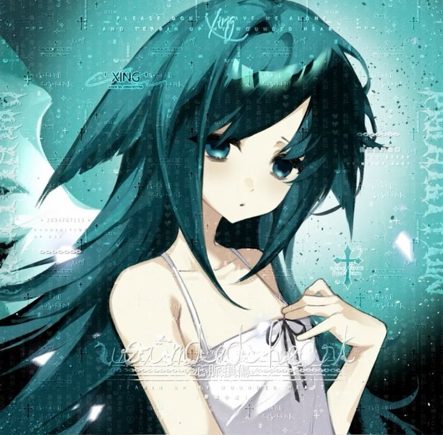
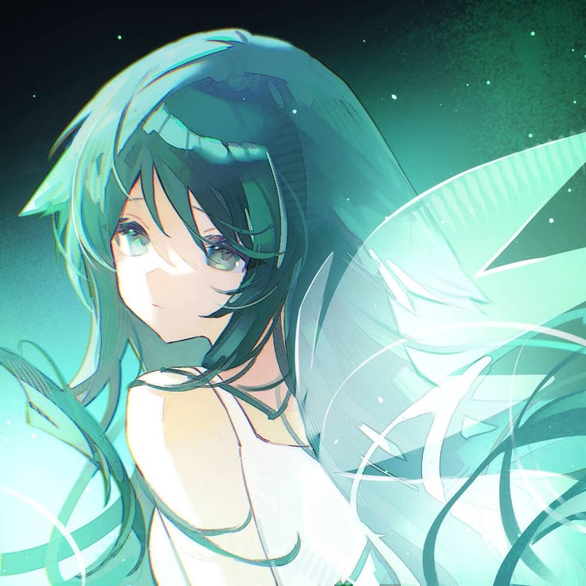
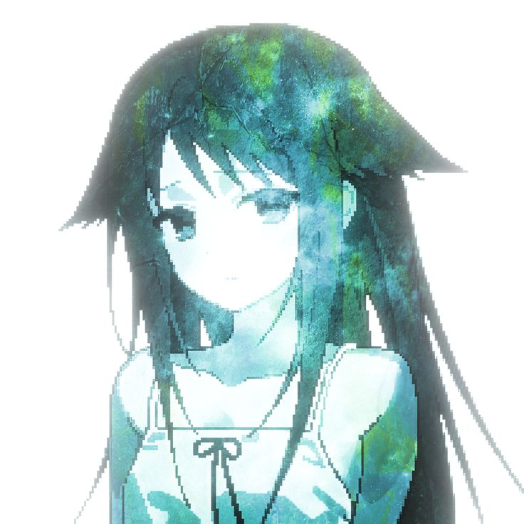
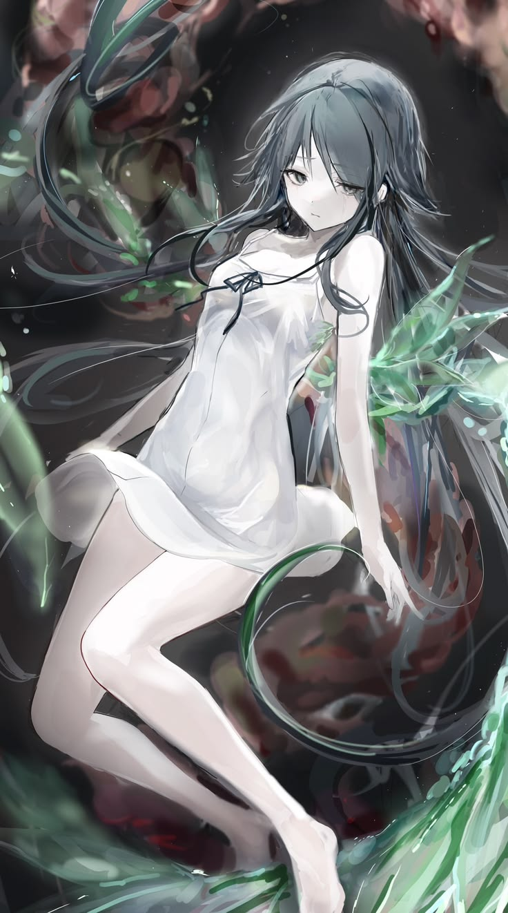
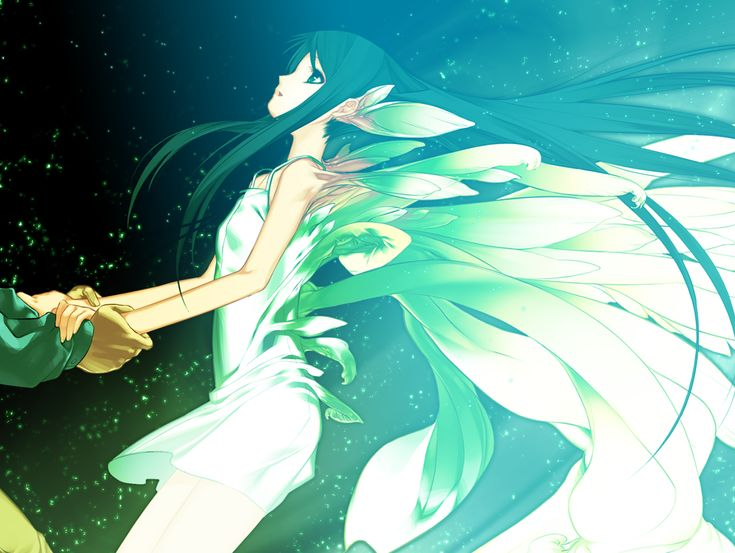

Меня зовут Сая
Я - Сая. Я не человек, но я научилась быть похожей на него. Я появилась в результате экспериментов и долго пыталась понять человеческий мир. Мне были чужды их чувства, привычки и привязанности, но со временем я начала узнавать их всё лучше. Встреча с Фуминори изменила моё существование. Для него окружающий мир стал чем-то ужасным и непонятным, а я оказалась единственным существом, которое он мог воспринимать иначе. Рядом с ним я впервые почувствовала, что значит быть кому-то по-настоящему близкой. Возможно, я никогда не стану человеком. Но если я умею чувствовать, помнить и дорожить кем-то — разве мои чувства от этого становятся ненастоящими?
Факты
-
Одинокая
Сая отличается от людей и часто остаётся одинокой.
-
Не человек
Она выглядит как человек, но имеет другое происхождение.
-
Тёплая
Несмотря на свою необычность, Сая способна проявлять привязанность.
Увлечения
-
Чтение
Помогает узнавать больше о человеческом мире.
-
Готовка
Одна из привычных вещей человеческой жизни.
-
Эксперименты
Наука тесно связана с историей Саи.
-
Психология
Помогает лучше понимать людей и их чувства.
Карточки

Голос
Голос Саи звучит тихо и необычно, но в нём есть что-то живое и настоящее. Через него она пытается выразить чувства, которые не всегда может объяснить словами.
Музыка
Музыка становится для Саи способом чувствовать и понимать окружающий мир. В мелодиях можно услышать её настроение, одиночество и желание быть ближе к другим.


Эксперимент
Сая - результат эксперимента, который должен был изменить представление о жизни и человеке. Но со временем сам эксперимент превращается в попытку понять, что значит чувствовать и быть живой.
Последний свет
Она уходит туда, откуда уже не возвращаются. И всё, что остаётся - последняя рука, которую она ещё чувствует.
